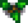
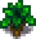
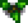
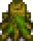

Green Rain Trees
This page or section contains unmarked spoilers from update 1.6 of Stardew Valley. Players may want to avoid or be cautious toward reading this article/section. |
| Article Stub
This article is marked as a stub for the following reason:
|
Green Rain Trees comprise three varieties of trees that can appear during the Green Rain weather event. On the day of the Green Rain weather event, approximately 75% of trees have a chance to turn into one of the varieties of Green Rain Trees. These trees revert back to their original form on the next day.
All three types of Green Rain Trees can spawn naturally during the Green Rain event, or they can grow from Mossy Seeds. Planted Mossy Seeds have about a 20% chance per day of growth, except in winter when trees do not grow. If the seeds are fertilized, then Green Rain trees will grow in five days (even in Winter).[1] Each of the three Green Rain Tree varieties may spread seeds like a common tree.
Type 1
Some appear with Moss, while others do not. They may drop a Mossy Seed when shaken. When chopped with an axe, they drop possible Moss, Wood, Sap, possible Mossy Seeds, and possible Hardwood (if the player is a Lumberjack).
| Stage 1 | Stage 2 | Stage 3 | Stage 4 | Stage 5 - Spring, Summer, Fall, Winter | Stump - Spring, Summer, Fall, Winter |
|---|---|---|---|---|---|
 |
 |
 |
Type 2
Some appear with Moss, while others do not. They may drop a Mossy Seed when shaken. When chopped with an axe, they drop possible Moss, Wood, Sap, possible Mossy Seeds, and possible Hardwood (if the player is a Lumberjack).
| Stage 1 | Stage 2 | Stage 3 | Stage 4 | Stage 5 - Spring, Summer, Fall, Winter | Stump - Spring, Summer, Fall, Winter |
|---|---|---|---|---|---|
 |
 |
 |
Type 3
These trees cannot grow Moss. They may drop a Mossy Seed when shaken. When chopped with an axe, they drop 5 Fiddlehead Ferns plus an additional 1 Fiddlehead Fern from the stump. During Winter, these trees become stumps. When tapped, each tree yields 1 Fiddlehead Fern every 2 days (except during Winter).[1]
| Stage 1 | Stage 2 | Stage 3 | Stage 4 | Stage 5 - Spring, Summer, Fall, Winter | Stump - Spring, Summer, Fall, Winter |
|---|---|---|---|---|---|
 |
References
History
- 1.6: Introduced.
- 1.6.3: Adult mossy green rain trees now boost the moss growth rate of nearby trees.
| Trees | |
|---|---|
| Trees | Green Rain Trees • Mahogany Tree • Maple Tree • Mushroom Tree • Mystic Tree • Oak Tree • Palm Tree • Pine Tree |
| Fruit Trees | Apple Tree • Apricot Tree • Banana Tree • Cherry Tree • Mango Tree • Orange Tree • Peach Tree • Pomegranate Tree |
| Seeds | Acorn • Mahogany Seed • Maple Seed • Mossy Seed • Mushroom Tree Seed • Pine Cone • Mystic Tree Seed |
| Fruit | Apple • Apricot • Banana • Cherry • Mango • Orange • Peach • Pomegranate |
| Misc | Large Log • Large Stump • Tea Bush |